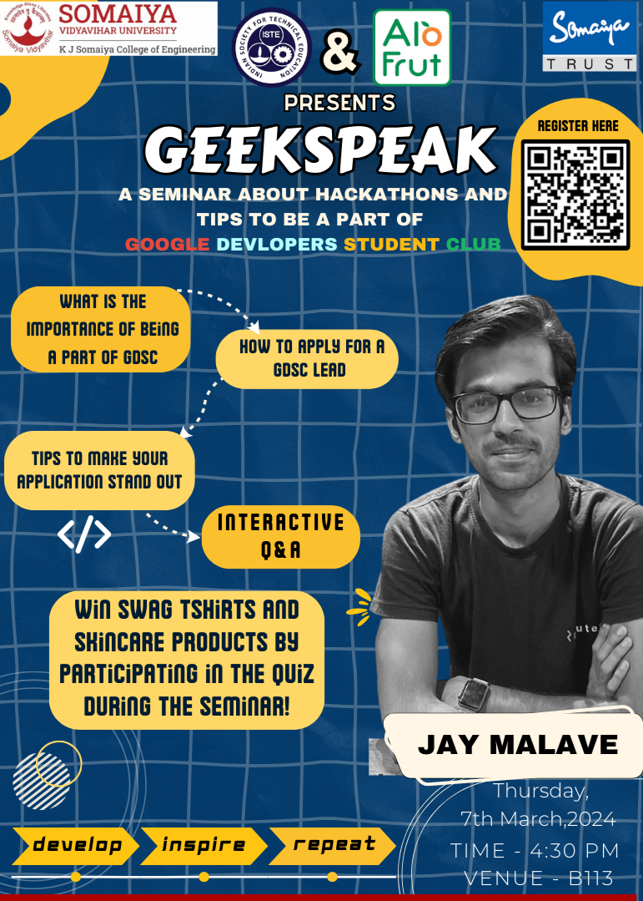
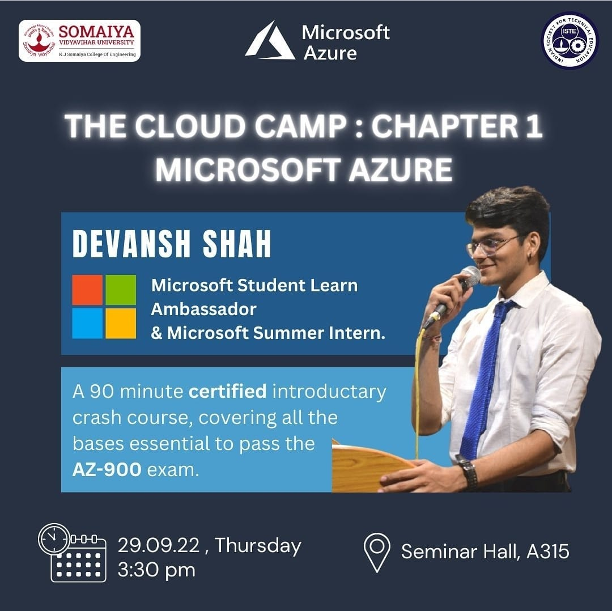
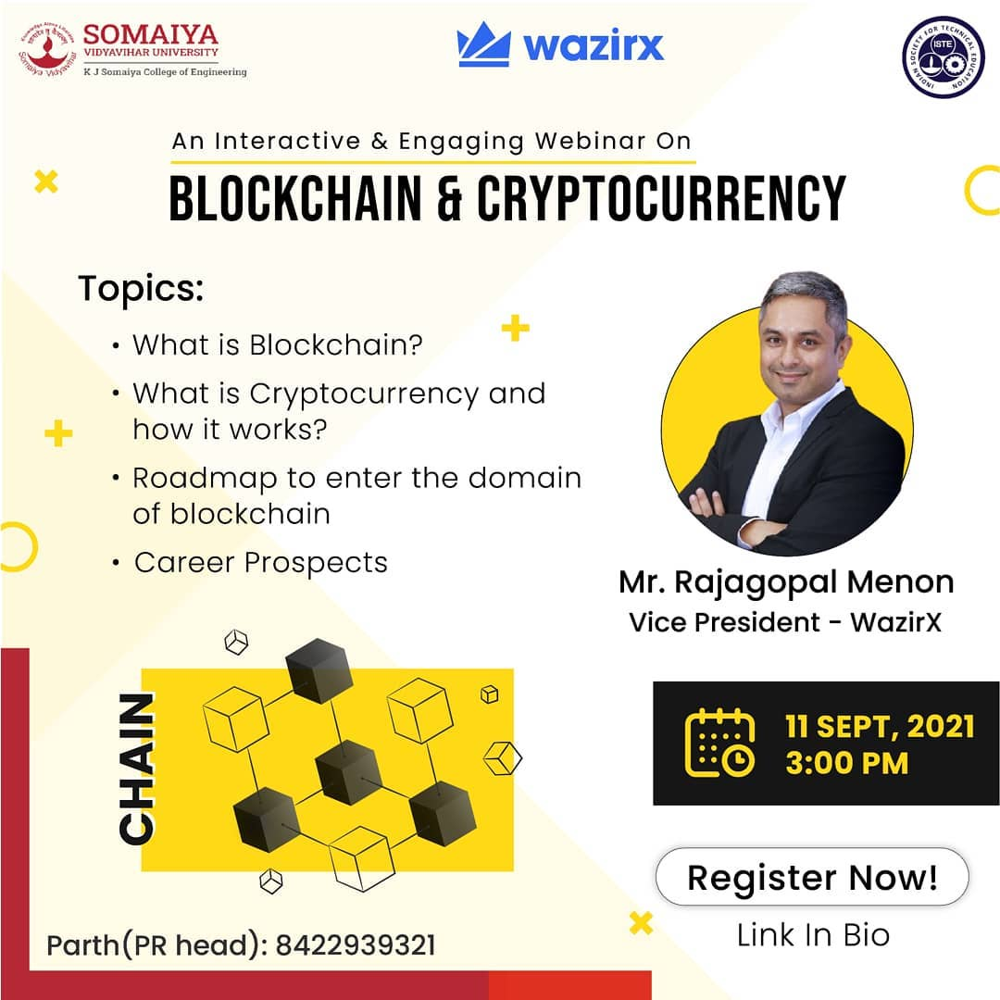
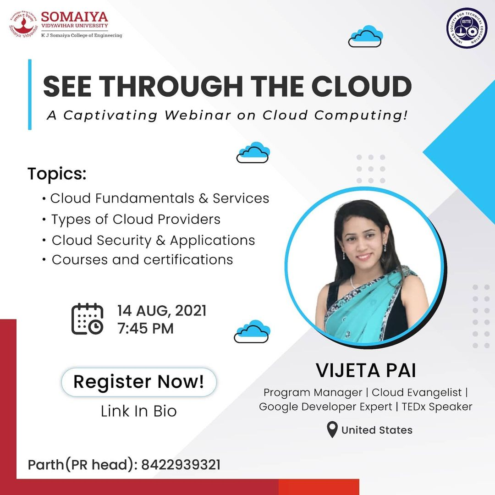
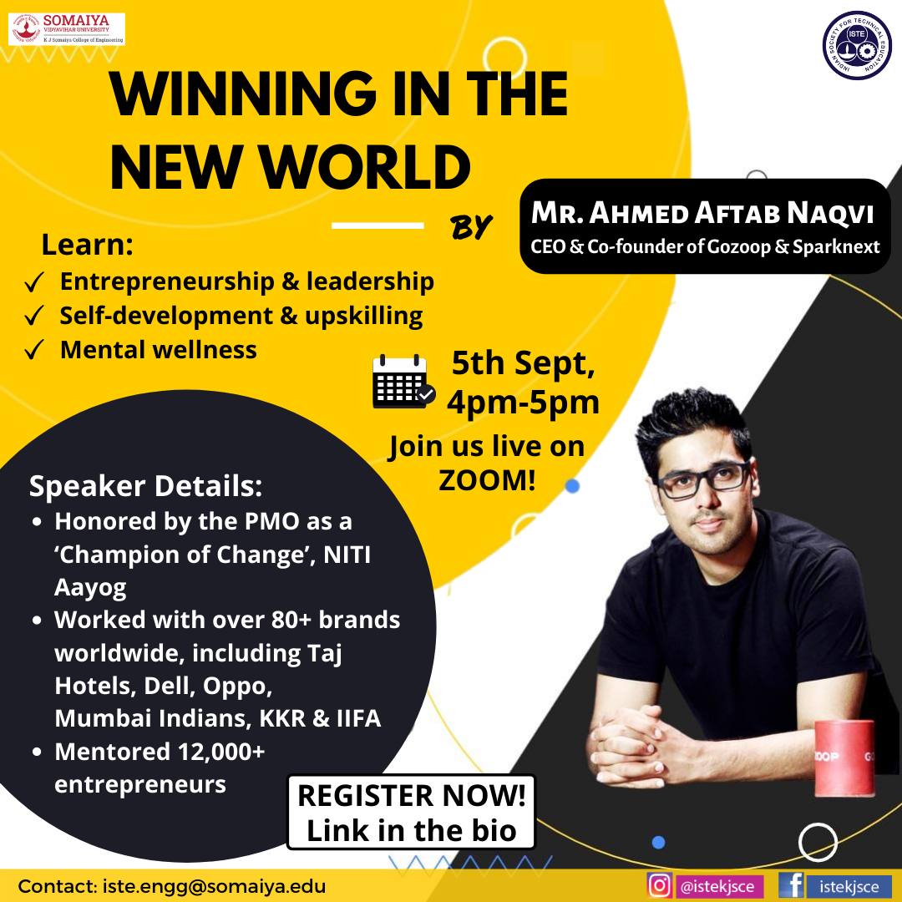
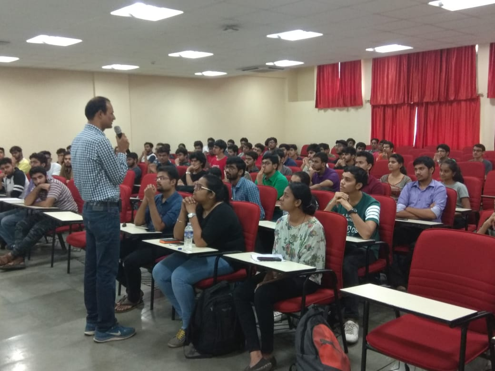
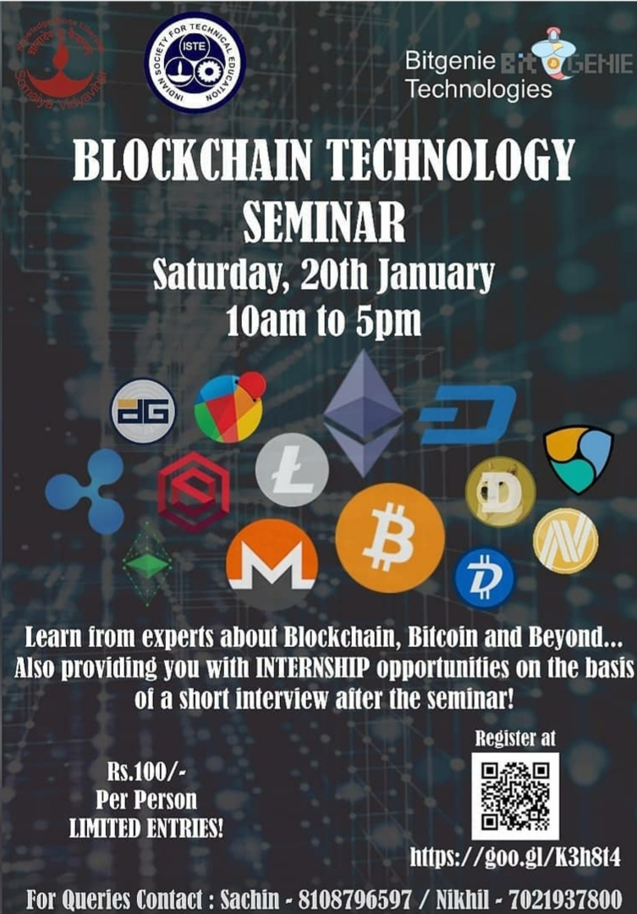
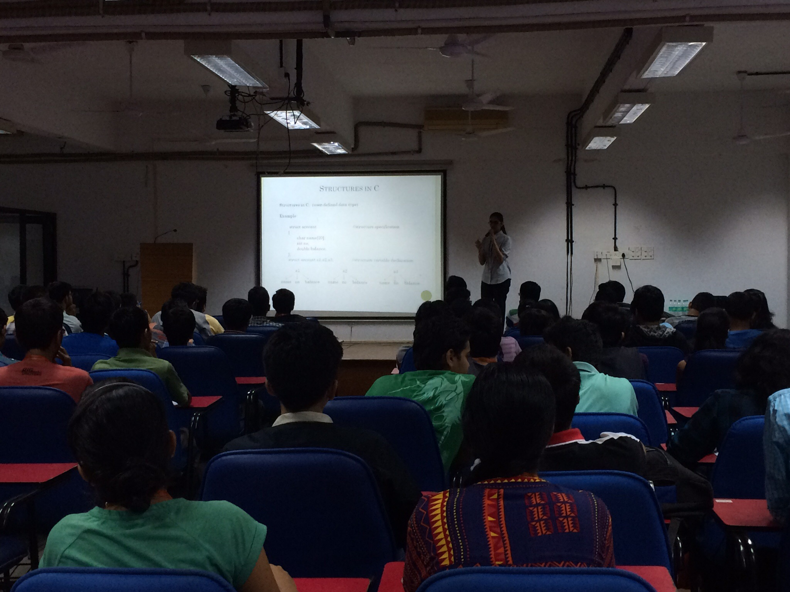
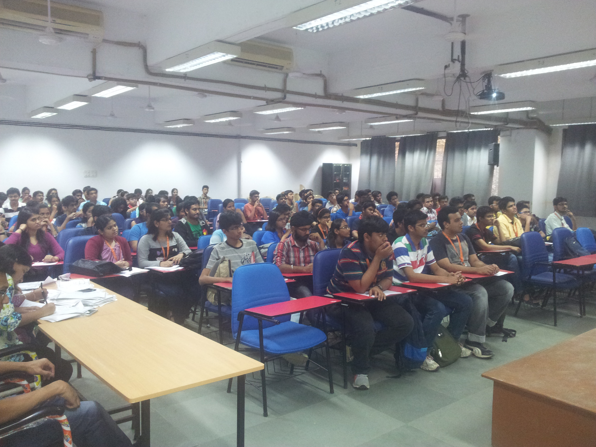
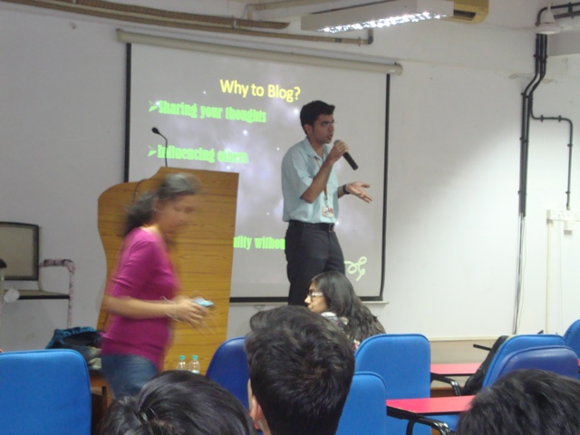

GeekSpeak
Date : 7th March, 2024
Mode : Offline
Time : 4:30pm
An informative session on programming, GDSC and hackathons.
GeekSpeak, led by Jay Malave, focused on programming, GDSC and hackathons. Jay shared insights on continuous learning, the benefits of GDSC and strategies for hackathon success.
The seminar ended with an interactive Q&A, encouraging networking and community building among participants.

The Cloud Camp: Chapter 1
Date : 29th September, 2022
Mode : Offline
Time : 3:30pm
The whole world is shifting to cloud.
This seminar was a 90 minute certified introductory crash course, covering all the bases essential to pass the AZ-900 exam.
Our Speaker , Mr. Devansh Shah is a Microsoft Student learn ambassador and Microsoft Summer intern

Blockchain and Cryptocurrency Webinar
Date : 11th September, 2021
Mode : Online
Time : 3pm
Blockchain is one of the most talked-about technologies in business right now.
It has the potential to drive major changes and create new opportunities across industries – from banking and cybersecurity to intellectual property and healthcare
Our Speaker , Mr. Rajagopal Menon is the Vice President at WazirX - India's largest and most trusted cryptocurrency exchange.

A captivating webinar on Cloud Computing
Date : 14th August, 2021
Mode : Online
Time : 7:45pm
Cloud Computing is the future and one of the most flamboyant evolution witnessed in the field of technology. It has seen the fastest adoption than any other technology in the domain.
Our speaker, Vijeta Pai is a GCP Certified and Accredited Technical Evangelist who is recognized as an Expert (GDE) in Google Cloud.
She's the creator of Cloud Demystified , and working on here passion to demystify Cloud Technologies using web comics and animated videos.

Webinar on Winning in the New World
Date : 5th September, 2020
Mode : Zoom Meeting
Time : 4pm to 5pm
"Entrepreneurship begins from just one idea that has the potential to change the world, but it definitely requires more than just an idea to pursue it."
In present times, it has become imperative to have a holistic approach towards enhancing your skillset in terms of self-development,mental wellness,leadership qualities etc. in order to harness the power of your ideas to fruition.
It’s no secret that the world has been changing before our eyes, and with the rapidly-evolving world around us, the keys to succeed also change with time.
Join us for a Webinar by Mr. Ahmed Aftab Naqvi(CEO and Co-Founder of Gozoop and Sparknext) in collaboration with ISTE-KJSCE!

Webinar on Resume Building and Interview Preparation.
Date Conducted : 16th August, 2020
Mode : Zoom Meeting
"An excellent resume has the power to open doors."
A resume outlines your relevant skills & experiences, and is definitely one of the important parts in any interview process. Thus, it's imperative for us to take a deep dive into what makes up a great entry-level resume!
Are you wondering whether your resume reflects your accomplishments and experiences in the best light, or, whether it is specifically tailored for the job you are applying for?
Also, COVID-19 has caused unprecedented changes in many spheres, including the employment sector. Do you ever ponder over what would be the most sought-after skills post COVID-19?
Don't worry! We have got you covered.
We are hosting an exclusive workshop by Mr. Pratik Upadhya (owner of Programmatix) on ‘Resume Building ’

Graduate Record Examination (GRE)
Date Conducted : 14th August, 2018
On 14th August, 2018, a seminar on Graduate Record Examination (GRE) was conducted by Mr. Nitin Lathe and organized by Indian Society of Technical Education (ISTE) at seminar hall A-315, K. J. Somaiya College of Engineering. He has been teaching GRE GMAT SAT and other competitive exams for past 15 years. He has trained over 30000 students till today. He is also an author of a book on calculation techniques called "Mathemagic". Nitin Lathe is also one of the best teachers at Institute of Management and Foreign Studies (IMFS). This seminar was attended by 88 students from Third year and Fourth Year B-TECH of KJSCE. He was here to guide and introduce students about the GRE examination. This seminar helped students to get information about GRE exam and its marks distribution and also about which are the best countries they can go for further studies.

BlockChain Technology Seminar
Date Conducted : 20th January 2018
Time : 10am to 5pm.
Crores of rupees are transacted everyday on the internet. Blockchainis the reason for all these transactions being safe and secure.
Blockchain is an extremely important system for anyone who wants to start a business on the internet. Sounds interesting, right?
ISTE in association with BitGenie Technology Pvt. Ltd. is organizing a seminar to let you learn everything about the Blockchain Technology.
The concept of Bitcoin will also be explained to you during the course of the seminar. Bitcoin is a cryptocurrency and worldwide payment system. It is the first decentralized digital currency. Learn everything about it in the seminar!
That's not it! BitGenie is also providing you with internship opportunities on the basis of a short interview after the workshop!

Basic concepts of OOP
Date Conducted : 5th Feb 2015
Time : 5:15 pm
The first ISTE event of the even semester was a seminar conducted by Priya Asher and Chandana Bathulapallion the basic concepts of object-oriented programming using Java programming language. This seminar was primarily for First Year Engineering students but was open to anyone wishing to revise their OOP basics. The seminar began with a general overview of programming, wherein variables and data types were explained, and later covered the 3 major OOP concepts of Encapsulation, Inheritance and Polymorphism. A number of Java example programs were shown in the presentation in order to clarify these concepts, and at the same time familiarize the students with the syntax of Java. At the end of the presentation, an application game of X and Zero was demonstrated to them using Eclipse software.The number of students who registered for the event was overwhelming, considering that the total attendance count was above 80. This crowd also included some ME students. The response of the students was appreciative and certificates were provided to them within the following week.

GATE SEMINAR
Date Conducted : 3rd SEPT 2015
Time : 5.15pm to 6.15pm
GATE Seminar was conducted by Prof.Vijay Shekhar.GATE is an entrance examination for post graduate courses in IIT/NITS and other private institutes. The main aim of this seminar is to aware students about GATE examination. Student were present in large number and queries of students regarding the exam was discussed. The seminar was very interactive and friendly and Prof and student shared many inforamtion and views.

Seminar on Blogging
Date Conducted : 24th Jan 2014
Time : 5pm to 6:30pm
From the very basic concepts of Blogging to the explanation of a way to earn some Money from Blogging was explained. Necessity, Scope, Technical Aspects, Ethics about the Blogging formed the later part of the Seminar.